Free AI Website Creator当你开始理解构图，看电影就不再只是“看”，而是在学习每一个画面的表达。
构图，是画面元素的安排方式。
它决定了观众会先看到什么、如何去看。
今天就带你认识一下影视中 4 种最基础的构图。
通过左右或上下的平衡，让视觉更集中，也更有秩序感。
画面被中间的窗框垂直分为两半，形成了强烈的对称感。 左右两侧的人物（杰克和玛拉）背对镜头，面向窗外，在视觉上创造了平衡。
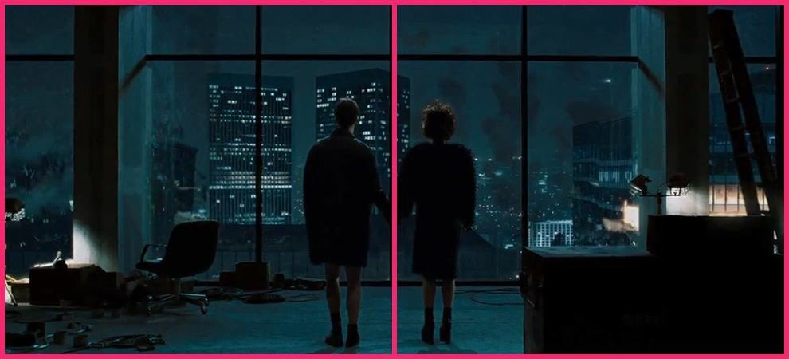
人物被精确地放置在画面的正中央，位于两扇对比鲜明的门之间，立即吸引了观众的注意力。
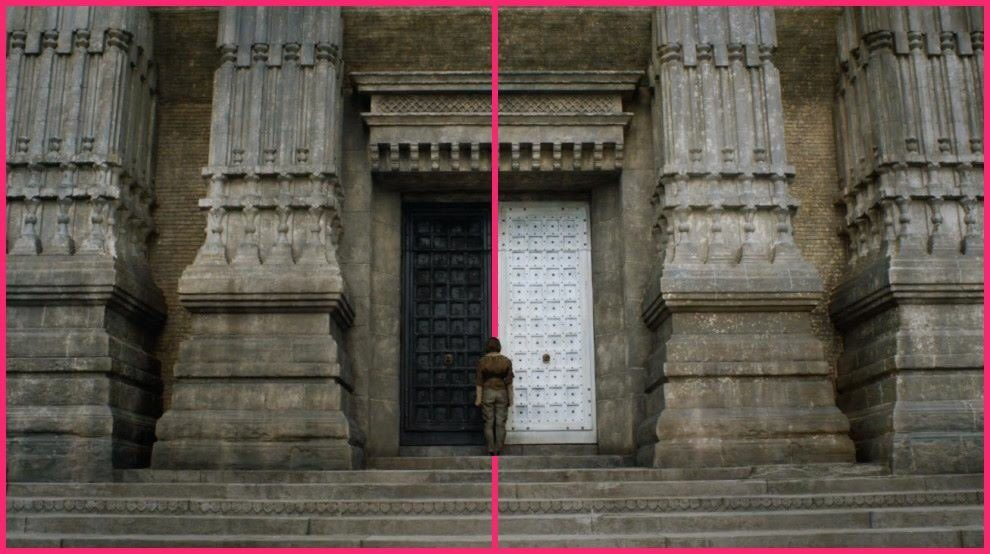
创造了一种平衡感，同时也通过强烈的线条将前景的杂乱（落叶）与中景的主体（人群）有效地分隔开来，使画面结构清晰、稳定。
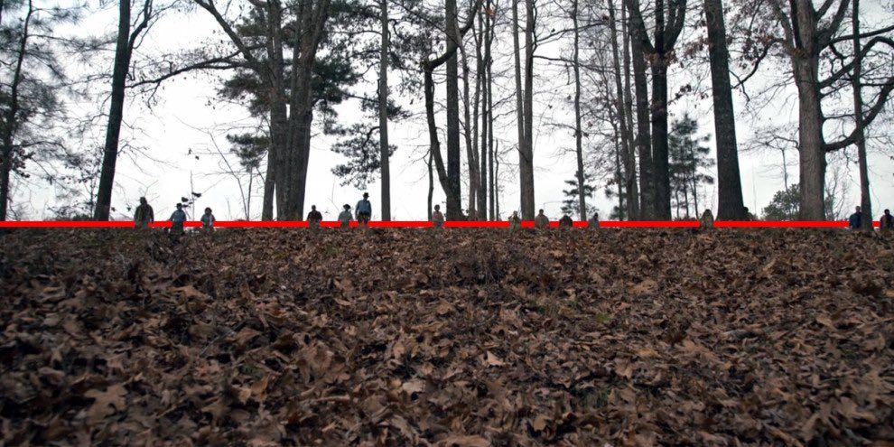
这种构图吸引了观众的注意力，并强调了两个场景之间的关系——可能是同时发生、相互关联或形成对比的事件。构图创造了强烈的叙事张力，暗示了冲突即将发生或正在发生。
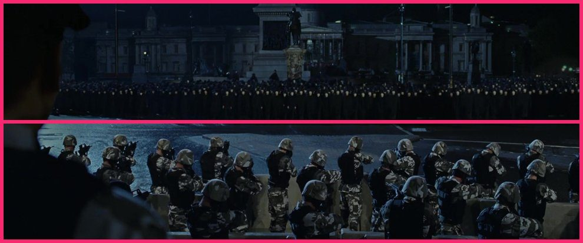
顶视构图是一种俯拍视角，有助于强化画面结构，并清晰呈现元素之间的关系
镜头从正上方垂直向下拍摄，这种极端的俯视角度使得人物看起来像是被困在一个狭小的洞口中，周围堆满了盒子，突出了被包围或被困的视觉效果。
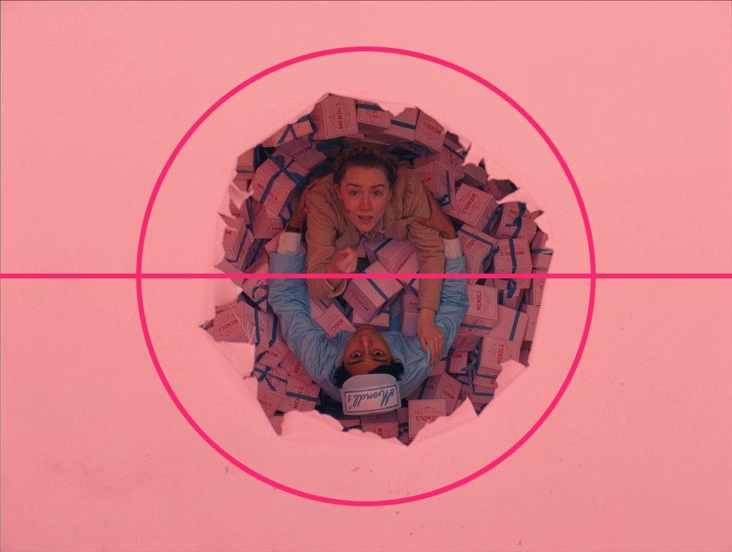
这是一个极端的俯拍镜头（90度俯视）。 这种视角将观众置于一个观察者的位置，使画面中的元素看起来像是一个精心安排的微缩模型或舞台布景。
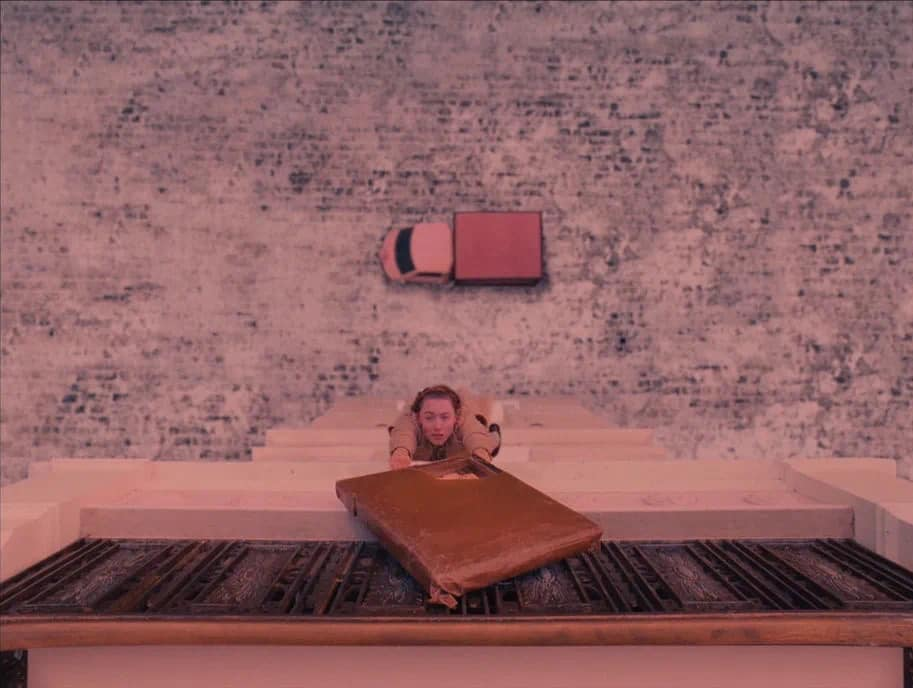
这张图片通过高角度构图，强调了中间人物被周围人群包围的视觉效果，营造了一种被审视或被淹没的氛围。
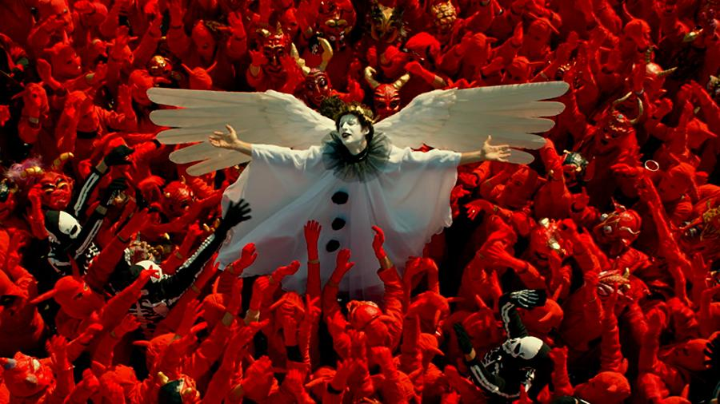
图像采用高角度俯拍视角，三个角色的目光都朝上（看向镜头），这种视线汇聚形成了一种无形的引导线，将观众的注意力直接吸引到他们脸上。
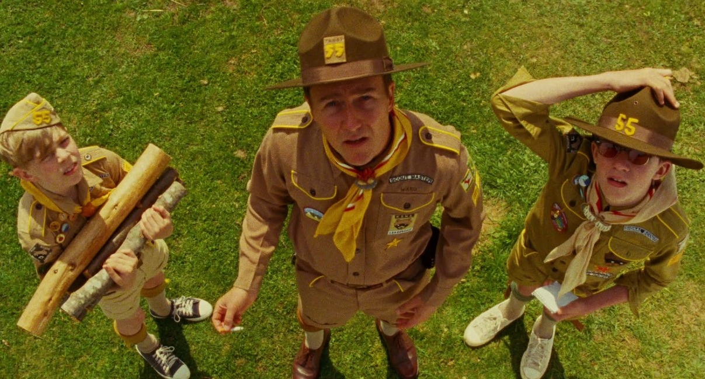
利用画面中的线条，引导视线看向主体。让观者的目光，有方向地移动。
将主体或重要线条沿对角线方向摆放，有助于产生强烈的动感和深度感，使画面更具活力和张力。
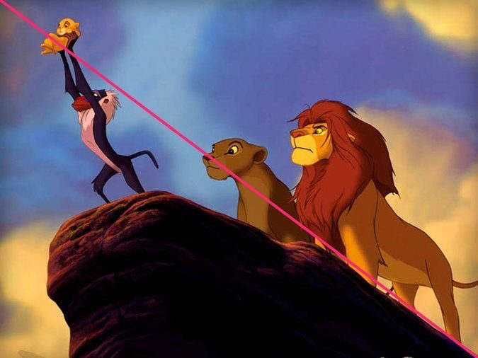
画面中主要的引导线包括地板砖的接缝、两侧高台的边缘以及天花板与墙壁的交界线这些线条都遵循透视原理，向画面中心汇聚，形成一个强烈的灭点，最终聚焦在画面正中央的人物主体上。
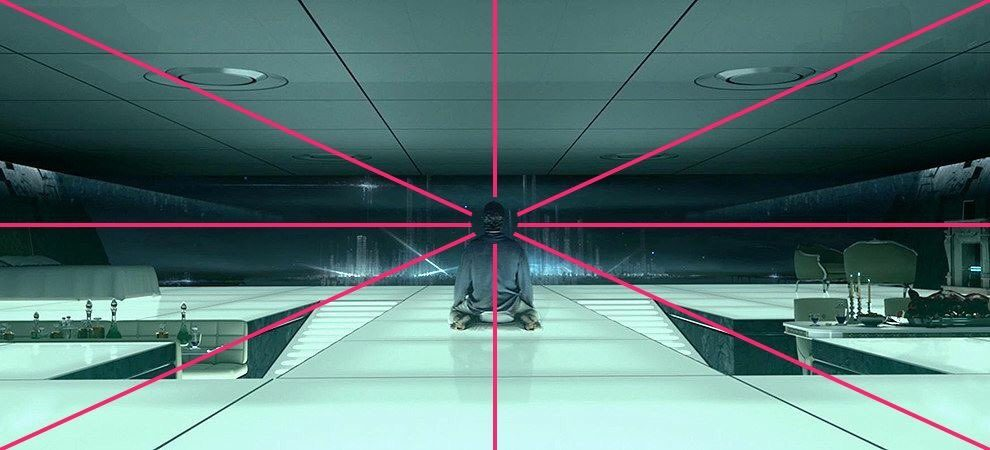
画面中最重要的构图元素是道路和两侧的行刑柱。这些元素形成了强烈的视觉引导线，汇聚于远处的地平线或消失点。 我们的眼睛会自然地沿着这些线条从前景移向背景。
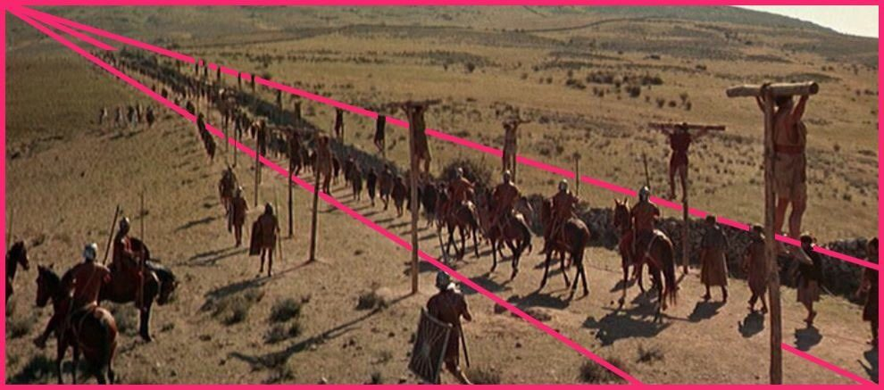
画面利用多条视觉线条（桌子、蜡烛、建筑结构）将观众的视线直接引导至画面最深处的中心点。
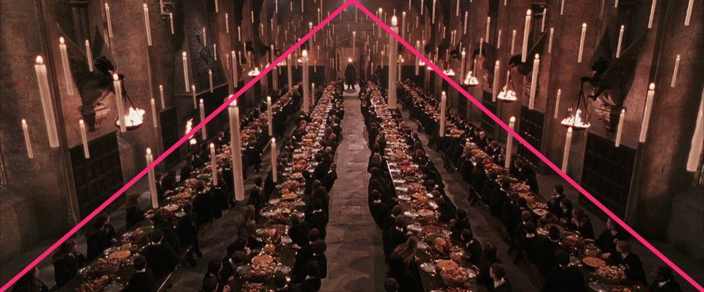
通过仰视视角，提升主体的视觉重量，并增强画面的张力与气势。
摄影师将相机放置在低于蜘蛛侠和上方人物视线的高度，向上仰拍。 这种角度使观众仿佛置身于场景下方，向上看。
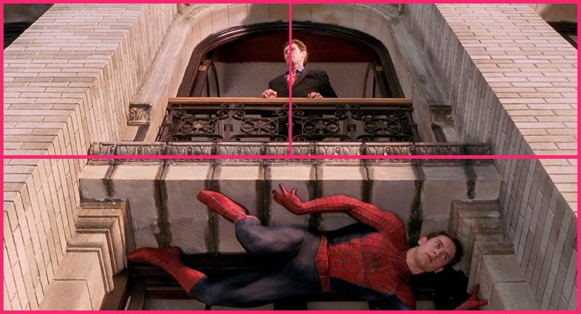
镜头被放置在地面上，角色直接注视镜头，仿佛在与屏幕前的观众对话，增强了这种被审视、被压迫的沉浸感。这种仰视使得角色显得高大、威严且具有威胁感，确立了绝对的心理优势。
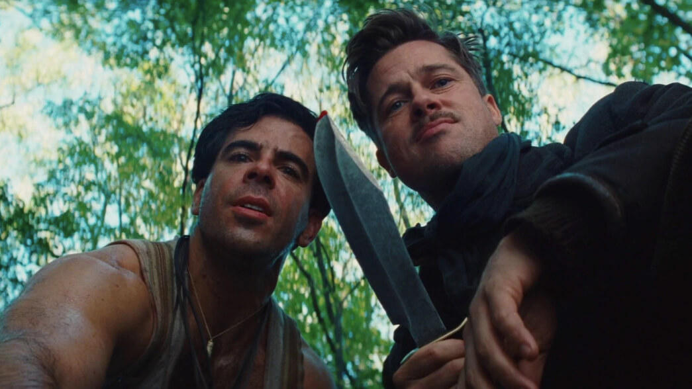
通过将镜头放置在低于人物眼睛水平线的位置向上拍摄，会让小丑这个角色在视觉上显得更加高大、雄伟。这种角度传达了一种压迫感，暗示角色正处于掌控地位，给观众带来一种心理上的威胁感。
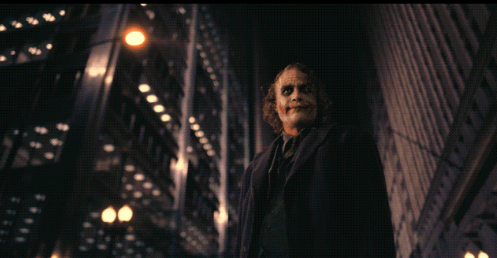
摄影机位于较低的位置，仰视拍摄三个人物。 这种角度使人物显得高大、具有压迫感和力量感，增强了画面的戏剧张力。
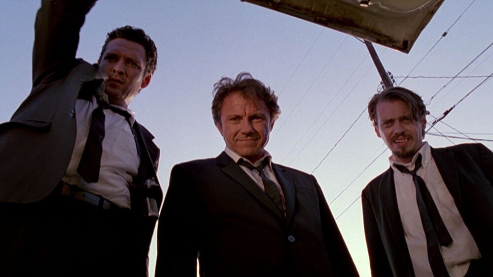
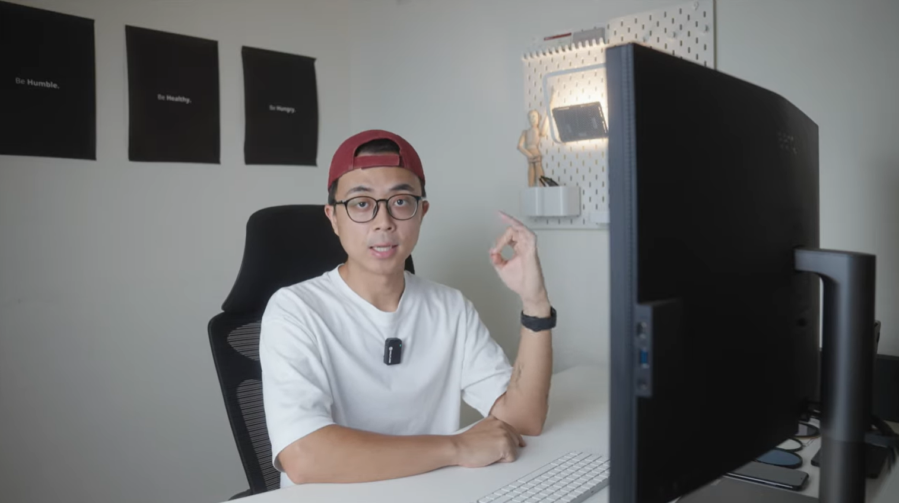
Free AI Website Creator